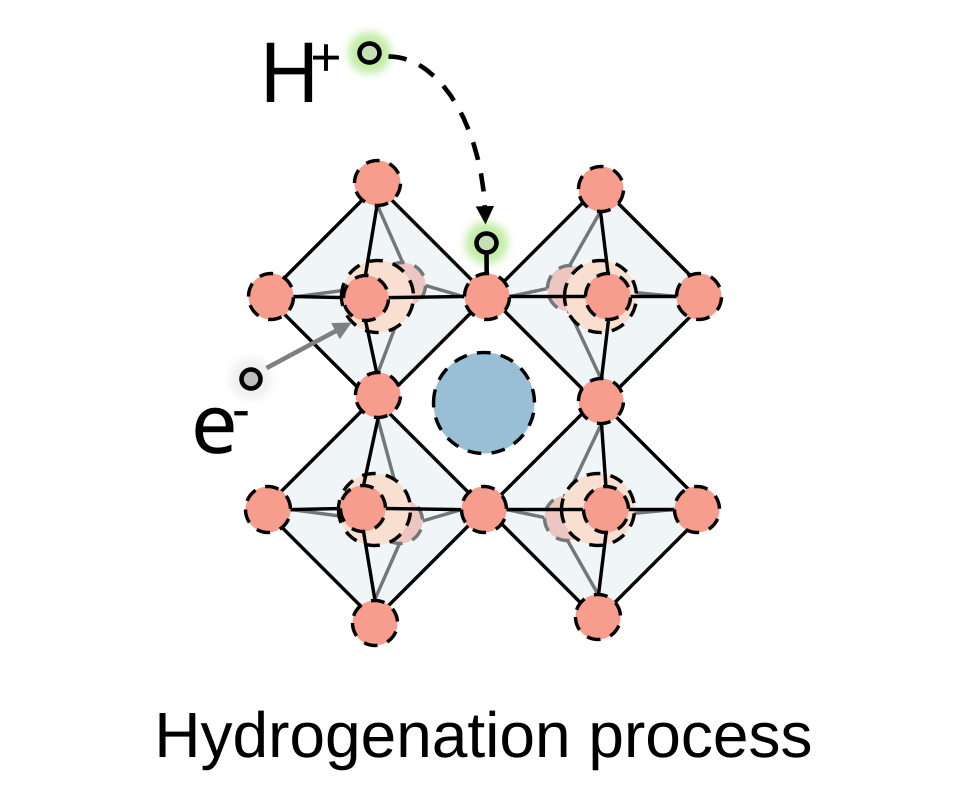

Materials Science & Engineering
Bin Zhao
Understanding ion dynamics in functional oxides.
Electrochemical ion intercalation, defect chemistry, and ion transport in functional oxide thin films.
Ph.D. Student · Westlake University/Hangzhou, China
Solid State IonicsFIG. 01

- A-site cation
- B-site cation
- Oxygen
Research focus
- Electrochemical intercalation
- Ion transport
- Operando characterization
01 / About
Research at the
atomic scale.
Current position
Institution
Research group
Supervisor
02 / Research
Following the ions.
From defect chemistry to transport kinetics and operando measurement.
03 / Publications
Published work.
4 journal articles
04 / Background
Education & recognition.
Education
Honors & awards
05 / Other work
Beyond the papers.
Patent
Conference presentation
Technical toolkit
Methods & skills.
06 / Contact
Let's discuss science.
Interested in functional oxides, defect chemistry, or the electrochemistry of ion transport? Feel free to get in touch.